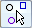

Automatic Coordinate Dimension command bar
The Automatic Coordinate Dimension command bar selects the geometry to dimension, and then displays the Dimension command bar for you to apply additional formatting before the dimensions are placed.
You can use the Back button on the Dimension command bar to return to the Automatic Coordinate Dimension command bar. Do this when you want to change the selection set before placing the first set of coordinate dimensions, or when you want to start a new dimension alignment set.
- Select Drawing View

-
Specifies that coordinate dimensions are to be placed on all of the geometry in a selected 3D drawing view.
The Select Drawing View option is useful when you want to place coordinate dimensions across multiple views, such as a source view followed by a detail view.
- Select Geometry

-
Enables you to select individual drawing elements as input to the command. Use this option when you are placing coordinate dimensions on a 2D drawing view or 2D geometry, which are not associative to a model.
You can drag a box to fence select a group of elements, and then use Ctrl+click to remove the elements you do not want to include.
- Keypoint Options
-
Displays the Keypoint Options dialog box for you to specify the types of keypoints that you want to use for placing coordinate dimensions.
- Accept
-
Accepts the current selection set and continues with the dimension placement step. Displays the Dimension command bar.
- Deselect
-
Deselects the current selection set for you to start over.
How do I
Place coordinate dimensions automaticallyPlace a coordinate dimension
Place a coordinate dimension using a coordinate system
Place an angular coordinate dimension
Place coordinate dimensions between drawing views
Change the origin dimension in a coordinate dimension group
Change the coordinate origin value
Learn more
Ordinate dimensionsCoordinate dimension alignment sets
Adding and removing jogs on coordinate dimensions
Look up more details
Dimension command barCoordinate dimension handles
Automatic Coordinate Dimension command
Keypoint Options dialog box
Coordinate Dimension command
Angular Coordinate Dimension command
Change Coordinate Origin command
Lines and Coordinate tab (Dimension Style and Dimension Properties)